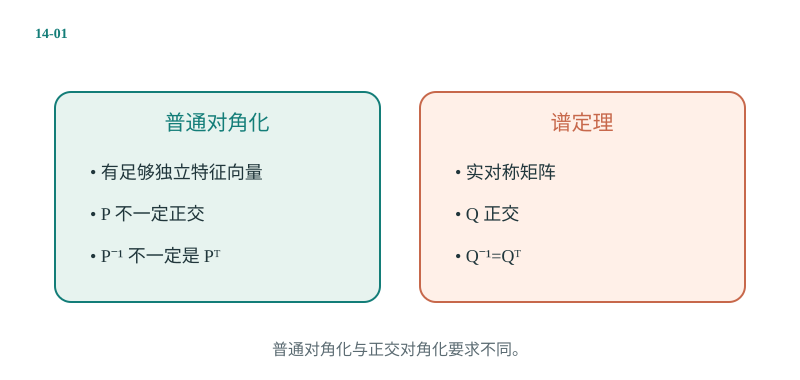
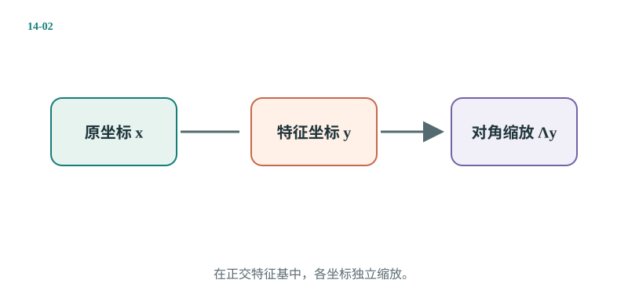
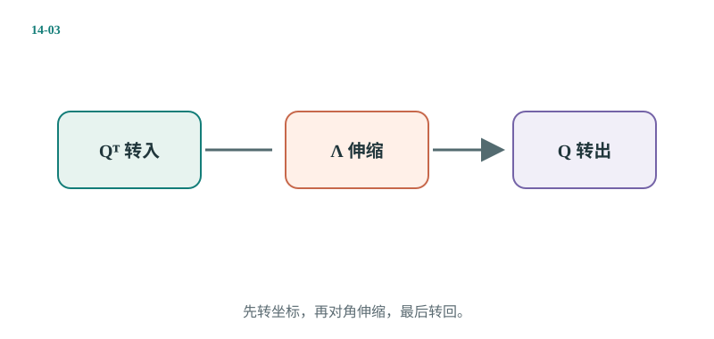
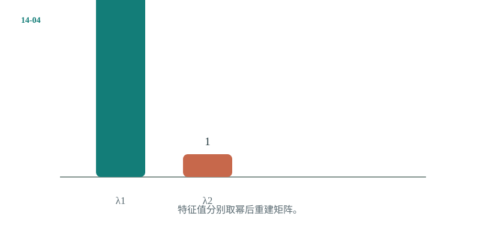
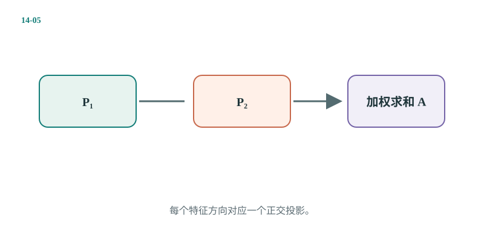
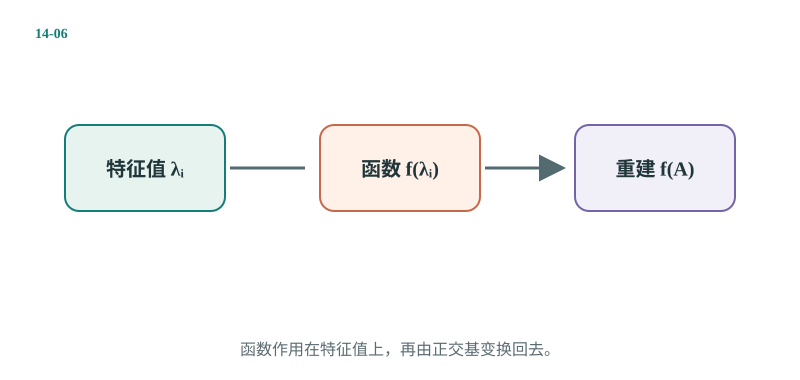
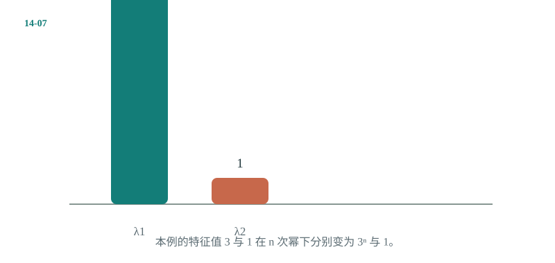

谱定理：用一组正交方向看懂对称矩阵
实对称矩阵可以在一组正交规范基下变成对角矩阵。复杂的线性变换，因而拆成互不干扰的方向伸缩。
01普通对角化与正交对角化的区别
如果 A 有 n 个线性无关的特征向量，可以写成 A=PΛP⁻¹。但 P 的列向量不一定正交，P⁻¹ 也不一定等于 Pᵀ。普通对角化只要求一组特征基存在。
谱定理更强：每个实对称矩阵都能找到正交规范特征基，因此 A=QΛQᵀ。

02正交特征基是新的坐标系统
对 A=[[2,1],[1,2]]，取 q₁=(1,1)/√2、q₂=(1,−1)/√2。把它们作为 Q 的两列，Λ=diag(3,1)。任何 x 都可以在这组正交方向上写成 x=y₁q₁+y₂q₂。
计算 Ax 时，先把 x 转成 y=Qᵀx，再把两个坐标分别乘以 3 和 1，最后乘 Q 回到原坐标。

03把矩阵拆成 Q、Λ、Qᵀ 三块
Q 是正交基变换，Λ 是对角伸缩，Qᵀ 是回到原坐标的逆变换。三个步骤的维度都是 n×n，乘积仍是 n×n。
对本例，QΛQᵀ=[[2,1],[1,2]]。这个乘法检查与特征对检查互相独立：一个验证整体分解，一个验证每列满足 Avᵢ=λᵢvᵢ。

04矩阵幂：重复应用只需对角元素乘方
谱分解让矩阵幂变得简单：Aᵏ=QΛᵏQᵀ。因为 QᵀQ=I，中间的 QᵀQ 会一层层抵消；最后只需对每个特征值取 k 次方。
本例 A²=[[5,4],[4,5]]，因为特征值变成 9 和 1。

05谱投影：每个特征方向都有自己的开关
若特征值互异，Pᵢ=qᵢqᵢᵀ 是投影到第 i 个特征方向的矩阵。它满足 Pᵢ²=Pᵢ，且不同特征方向的投影相乘为零。矩阵可写成 A=ΣλᵢPᵢ。
对于重复特征值，应将同一特征子空间的投影合并，避免把基的任意选择误认为唯一结构。

06矩阵函数：指数、衰减与动力系统
只要函数 f 能作用在特征值上，就可以定义 f(A)=Q f(Λ) Qᵀ，其中 f(Λ) 对角线是 f(λᵢ)。例如矩阵指数 e^{tA}=Q diag(e^{tλᵢ})Qᵀ。
这在常系数线性微分方程 x′=Ax 中很重要：解可写成 x(t)=e^{tA}x(0)。

07交互：观察 A 的幂如何沿特征方向增长
拖动整数 n，页面按 Aⁿ=Q diag(3ⁿ,1ⁿ)Qᵀ 计算矩阵。你会看到两个特征方向的倍率不同：一个快速增长，另一个保持不变。
本例 Aⁿ=½[[3ⁿ+1,3ⁿ−1],[3ⁿ−1,3ⁿ+1]]。

谱分解矩阵幂实验
A=[[2,1],[1,2]]，特征值为 3 与 1。
A²=[[5,4],[4,5]]
08谱定理的边界：实对称是关键假设
二维旋转矩阵 [[0,−1],[1,0]] 的特征值是 ±i，在实数域中没有实特征向量，因此不能写成实正交矩阵 Q 与实对角矩阵 Λ 的形式。
复数域中对应的正规矩阵有更一般的谱定理，但那需要共轭转置与复内积。本篇结论限定在实对称矩阵。
自测与思考
如果一个实矩阵可对角化，是否一定可以正交对角化？请给出一个非对称反例。
延伸阅读与来源
- MIT 18.06 · Symmetric Matrices and Positive Definiteness。对称矩阵的正交特征向量。
- Gilbert Strang · Introduction to Linear Algebra。谱定理 S=QΛQᵀ 的条件与应用。